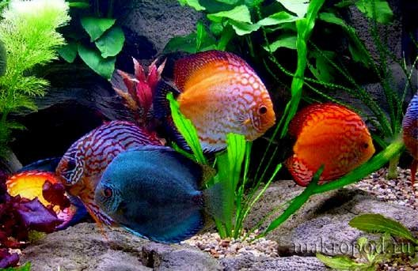
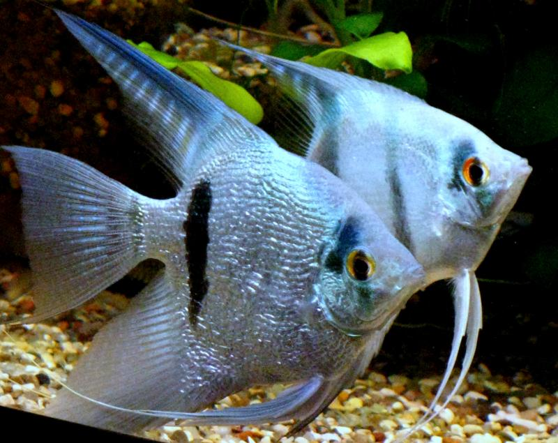
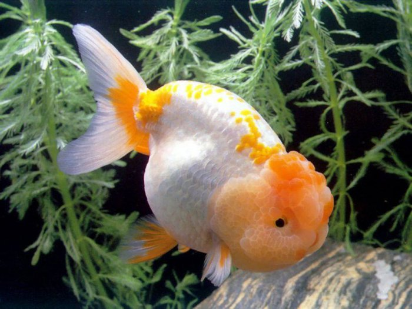

 Этот раздел посвящен аквариумным рыбкам. Для тех, кто хочет завести красивого домашнего питомца, но любит тишину и спокойствие, самым подходящим вариантом будет покупка аквариумной рыбки, а может быть сразу нескольких. Большое многообразие пород позволит выбрать именно тех питомцев, которые Вам больше всего нравятся - от больших и ярко окрашенных до маленьких, серых и незаметных. Уход за ними потребуется минимальный и, как правило, аквариум не занимает много места, поэтому зачастую аквариумных рыбок заводят даже те хозяева, которые не могут похвастаться избытком свободного времени и квадратных метров в своей квартире.
 Однако, в последнее время стало модно и престижно устанавливать большие аквариумы в офисах серьезных учреждений, в бизнес-центрах, торговых залах, ресторанах, банках и т.д. Сам факт существования аквариума говорит о фешенебельности, солидности заведения, о том, что его владельцы заботятся как о красоте помещения, в котором установлен аквариум, так и о психологическом состоянии своих клиентов, посетителей, партнеров. Ведь даже небольшой кусочек подводного мира с его обитателями своей размеренной жизнью способны помочь человеку хотя бы на время забыть о проблемах, успокоить , создать необходимый настрой на решение того или иного вопроса, улучшить такие важные составляющие здоровья человека, как дыхание, давление и пульс, снять усталость с глаз после длительной работы за компьютером или с бумажными текстами, а также успокоить нервы.
 Покупка аквариума, аквариумных рыбок и уход за ними - крайне увлекательное и полезное занятие для людей любого возраста. Оно позволит привить ребенку бережное отношение к маленьким и беззащитным подопечным, приучит к ответственности за их жизнь и здоровье, научит усидчивости и терпению. Для взрослого это станет прекрасной отдушиной, возможностью понаблюдать за миром, совершенно отличным от нашего, подумать о том, что большую часть нашей планеты составляет именно водная масса с гигантским многообразием живых существ самых разнообразных видов и размеров, большая часть которых еще не до конца изучена. А аквариумистам-профессионалам предоставляется отличная возможность проверить на практике некоторые научные гипотезы из области генетики и, возможно, вывести новые породы рыб. Выбирая аквариумных рыбок в качестве домашних питомцев, Вы получите массу положительных эмоций от общения с ними. Главное - понимать, что даже самое маленькое живое существо нуждается в Вашем внимании и заботе.